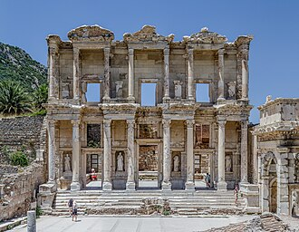
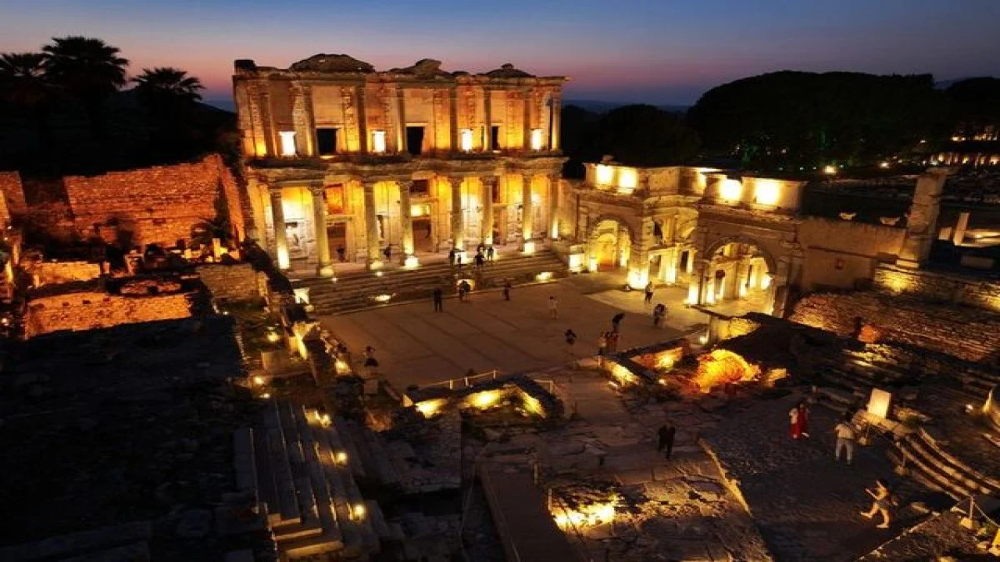
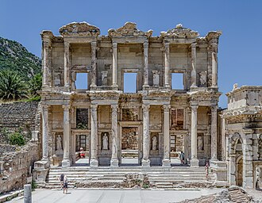
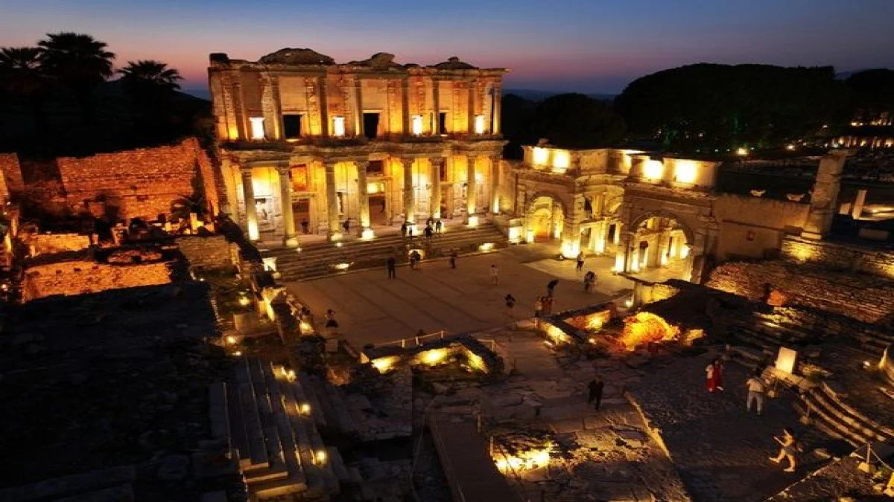

Efes Antik Kenti, İzmir’in Selçuk ilçesinde yer alan, antik çağlardan günümüze ulaşmış eşsiz bir arkeolojik alandır.
Antik dönemde önemli bir liman kenti olan Efes, Artemis Tapınağı, Celsus Kütüphanesi ve Büyük Tiyatro gibi yapılarıyla dikkat çeker.
UNESCO Dünya Mirası listesine alınan Efes, ülkemizin en önemli kültürel miraslarından biridir.
 


